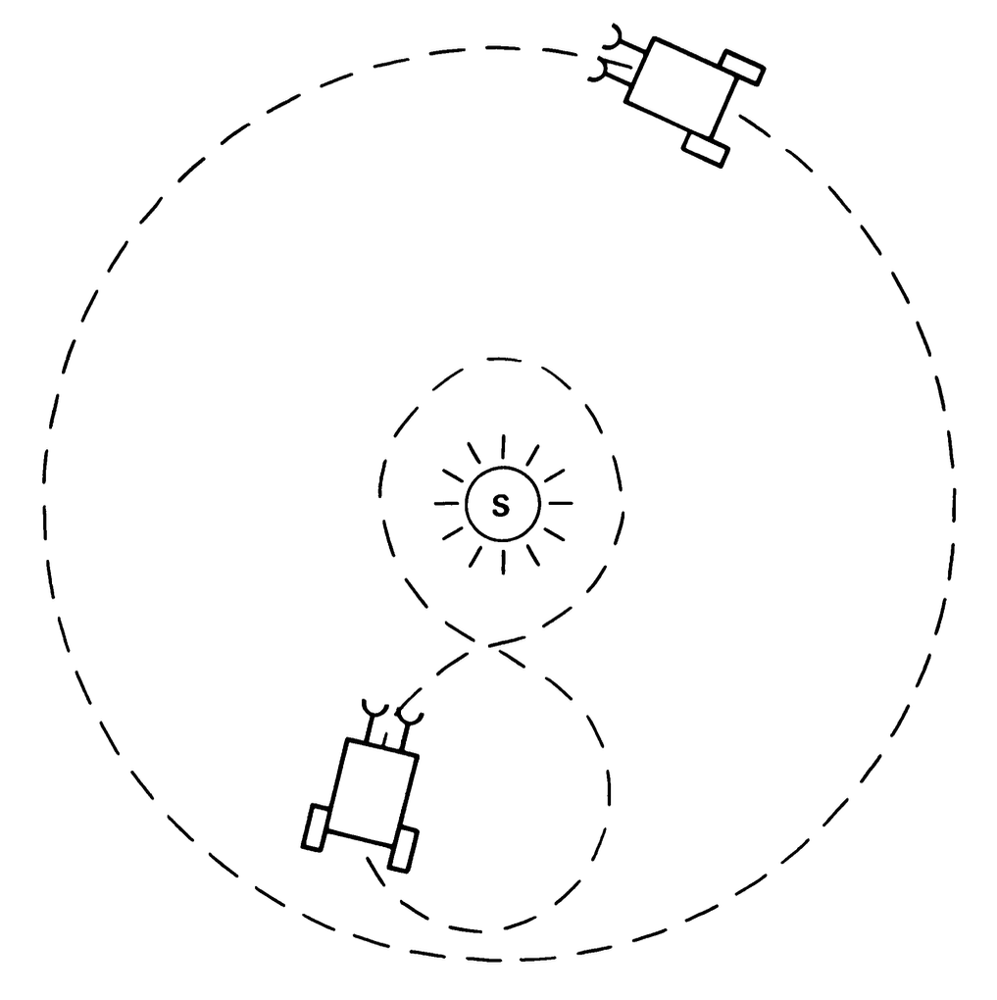
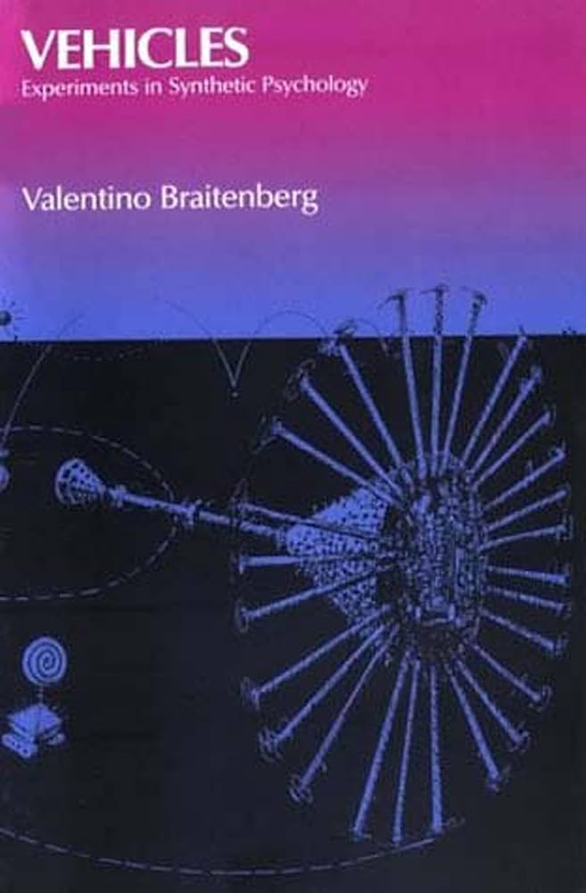
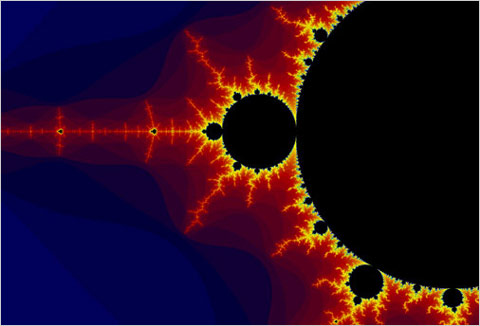

Available
Each Tangent track begins with a powerful text and a question worth sitting with.



Algorithmic procedures, machines, and the logic of computation.
Life, adaptation, inheritance, and the strange power of selection.
Matter, structure, transformation, and why materials behave the way they do.
Past tracks will appear here after completion.